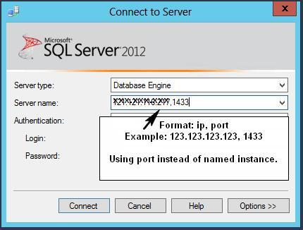
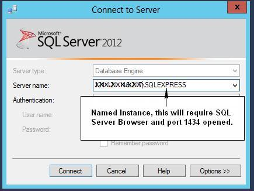

I just installed SQL Server Express 2012 on my home server. I'm trying to
connect to it from Visual Studio 2012 from my desktop PC, and repeatedly
getting the well-known error:
A network-related or instance-specific error occurred while establishing a
connection to SQL Server. The server was not found or was not accessible.
Verify that the instance name is correct and that SQL Server is configured
to allow remote connections. (provider: Named Pipes Provider, error: 40 -
Could not open a connection to SQL Server)
What I've done to try to fix this:
- Run SQL Server Configuration Manager on the server and enable SQL Server Browser
- Add a Windows Firewall exception on the server for TCP, ports 1433 and 1434 on the local subnet.
- Verify that I have a login on the SQL Server instance for the user I'm logged in as on the desktop.
- Verify that I'm using Windows Authentication on the SQL Server instance.
- Repeatedly restart SQL Server and the whole dang server.
- Pull all my hair out.
How can I get SQL Server 2012 Express to allow remote connections!?
Answer
Well, glad I asked. The solution I finally discovered was here:
How do I configure SQL Server Express to allow remote tcp/ip connections on
port 1433?
- Run SQL Server Configuration Manager.
- Go to SQL Server Network Configuration > Protocols for SQLEXPRESS.
- Make sure TCP/IP is enabled.
So far, so good, and entirely expected. But then:
- Right-click on TCP/IP and select Properties.
- Verify that, under IP2, the IP Address is set to the computer's IP address on the local subnet.
- Scroll down to IPAll.
- Make sure that TCP Dynamic Ports is blank. (Mine was set to some 5-digit port number.)
- Make sure that TCP Port is set to 1433. (Mine was blank.)
(Also, if you follow these steps, it's not necessary to enable SQL Server
Browser, and you only need to allow port 1433, not 1434.)
These extra five steps are something I can't remember ever having had to do in
a previous version of SQL Server, Express or otherwise. They appear to have
been necessary because I'm using a named instance (myservername\SQLEXPRESS) on
the server instead of a default instance. See here:
Configure a Server to Listen on a Specific TCP Port (SQL Server Configuration
Manager)
Suggest
The correct way to connect to remote SQL Server (without opening UDP port
1434 and enabling SQL Server Browser) is to use ip and port instead of
named instance.
Using ip and port instead of named instance is also safer, as it reduces the
attack surface area.
Perhaps 2 pictures speak 2000 words...
This method uses the specified port (this is what most people want I
believe)..

This method requires opening UDP port 1434 and SQL Server Browser
running..
